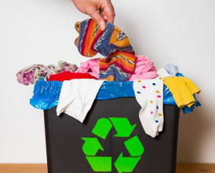
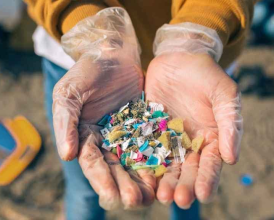
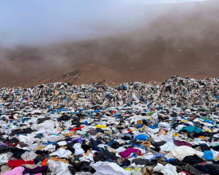
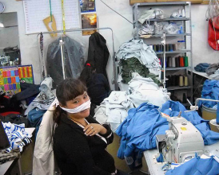
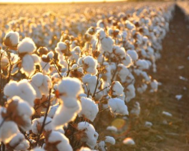
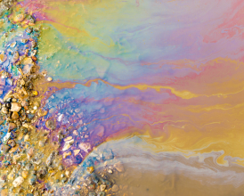

Modelos circulares
Modelos circulares y un diseño más inteligente para reducir el impacto ambiental de la industria textil

La ropa y el mar
El desastre invisible que crea la ropa en el mar: un 80% de los microplásticos vienen de la industria textil.

Tóxico
El desierto tóxico que acumula toneladas de ropa usada en el norte de Chile.

Trabajar hasta el desmayo
La otra cara de la sastrería de Occidente, trabajar hasta el desmayo en las fábricas de Camboya.

Un cultivo que mata
El 25% del total de pesticidas utilizados en el mundo se usa en el cultivo de algodon, y entre ellos, se encuentran algunos de los más peligrosos para el ser humano.

Tintando la región
A menudo los locales, sin ninguna otra fuente de agua de la que abastecerse, la usan para beber o como agua de riego para los cultivos.